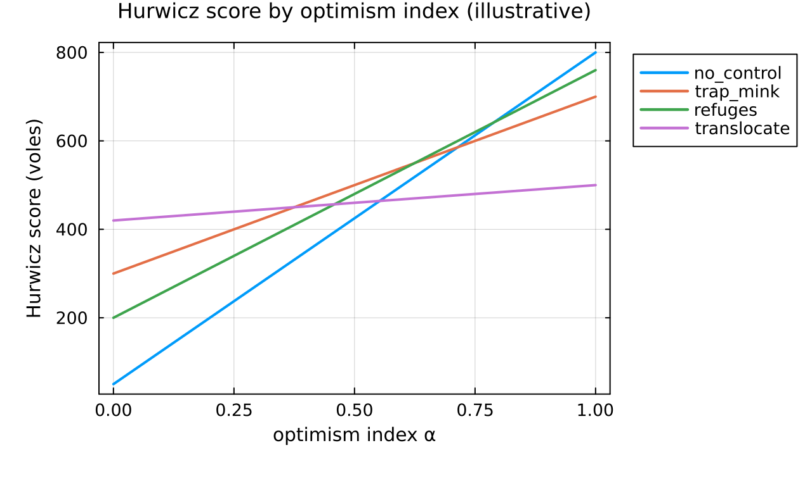

Decision rules side by side
Simon Frost
- Motivation
- The problem
- The rules
- Why they disagree
- Satisficing
- Rules that look at the tail
- Ties
- What to take away
- Next
Motivation
Maximising the expected number of individuals is one way to choose. It needs probabilities for the states, and it is indifferent to how bad the worst case is. Other rules make other commitments: guard against the worst state, hope for the best one, treat all states alike, or limit how much one could come to regret the choice. When the rules agree, the decision is easy to defend. When they disagree, the disagreement is itself the result, and it should be reported.
This vignette applies seven rules to one table: expected utility, maximin, maximax, Hurwicz, Laplace, minimax regret and satisficing.
The problem
American mink are spreading along a river that holds a colony of water voles. The manager can do nothing, trap mink, build reed-bed refuges that give the voles cover, or move part of the colony to a mink-free site. The outcome is the number of water voles alive in five years, counting the animals at both sites when some are moved.
The state is how far the mink get: absent from this stretch, transient visitors, or established.
All numbers are illustrative, not data and not estimates for any real river.
using DecisionAnalysis
include(joinpath("..", "_common.jl"))
using Plots
actions = [:no_control, :trap_mink, :refuges, :translocate]
states = [:absent, :transient, :established]
voles = [800 400 50 # no control: fine without mink, a collapse with them
700 600 300 # trapping: disturbance when there are no mink, protection when there are
760 480 200 # refuges: cheap in disturbance, partial protection
500 450 420] # translocation: losses in the move, then little exposure
payoff = individuals_payoff(PayoffTable(actions, states, voles))PayoffTable{Int64}: 4 actions × 3 states
| action | absent | transient | established |
|---|---|---|---|
no_control | 800 | 400 | 50 |
trap_mink | 700 | 600 | 300 |
refuges | 760 | 480 | 200 |
translocate | 500 | 450 | 420 |
The belief is that mink are absent with probability 7/10, transient with 1/5 and established with 1/10 (illustrative). No control is business as usual and is the baseline.
problem = DecisionProblem(payoff, [7 // 10, 1 // 5, 1 // 10]; baseline=:no_control)DecisionProblem(4 feasible of 4 actions × 3 states, FiniteBelief)The rules
Each rule is an aggregator, which turns a row of the table into one score, followed by a selector, which picks from the scores. decide(problem, rule) returns the scores and the chosen actions.
| rule | score of an action | uses probabilities |
|---|---|---|
MaxExpectedUtility() | expected payoff | yes |
Maximin() | worst payoff over states | no |
Maximax() | best payoff over states | no |
DecisionRule(Hurwicz(α)) | α × best + (1 − α) × worst | no |
DecisionRule(Laplace()) | unweighted mean over states | no |
MinimaxRegret() | largest regret over states (lower is better) | no |
Satisfice(threshold) | expected payoff, accepted if at least the threshold | yes |
rules = ["expected utility" => MaxExpectedUtility(),
"maximin" => Maximin(),
"maximax" => Maximax(),
"Hurwicz, α = 1/2" => DecisionRule(Hurwicz(1 // 2); name=:Hurwicz),
"Laplace" => DecisionRule(Laplace(); name=:Laplace),
"minimax regret" => MinimaxRegret()]
results = [name => decide(problem, rule) for (name, rule) in rules]
md_table(vcat("action", first.(results)),
[vcat(a, [r.scores[i] for (_, r) in results])
for (i, a) in enumerate(feasible_actions(problem))])| action | expected utility | maximin | maximax | Hurwicz, α = 1/2 | Laplace | minimax regret |
|---|---|---|---|---|---|---|
no_control | 645 | 50 | 800 | 425 | 416.67 | 370 |
trap_mink | 640 | 300 | 700 | 500 | 533.33 | 120 |
refuges | 648 | 200 | 760 | 480 | 480 | 220 |
translocate | 482 | 420 | 500 | 460 | 456.67 | 300 |
The scores of minimax regret are losses, so the smallest wins. All other columns are in voles and the largest wins.
gain = Dict(zip(feasible_actions(problem), expected_gain_over_baseline(problem)))
md_table(["rule", "first choice", "is the baseline", "expected gain over no control"],
[[name, first_choice(r), first_choice(r) == problem.baseline,
gain[first_choice(r)]] for (name, r) in results])| rule | first choice | is the baseline | expected gain over no control |
|---|---|---|---|
| expected utility | refuges | - | 3 |
| maximin | translocate | - | -163 |
| maximax | no_control | yes | 0 |
| Hurwicz, α = 1/2 | trap_mink | - | -5 |
| Laplace | trap_mink | - | -5 |
| minimax regret | trap_mink | - | -5 |
Six rules recommend all four actions between them. The last column gives the expected gain of each rule’s choice over no control, under the stated probabilities.
Why they disagree
Expected utility weighs each state by its probability. Mink are probably absent, so the actions that do well without mink score highly, and the three leading actions are within eight voles of each other. Refuges lead by three.
Maximin looks only at the worst cell in each row. Translocation has the best worst case, 420 voles, and is chosen although it has by far the lowest expectation. It gives up 163 voles in expectation relative to no control to be safe against established mink.
Maximax looks only at the best cell. No control has the best single outcome, 800 voles when there are no mink.
Laplace averages the row as if the states were equally likely. That gives established mink a weight of 1/3 where the belief gives 1/10, which favours trapping.
Minimax regret asks how far each action can fall short of the best action for the state that occurs. Trapping is never more than 120 voles behind. The next vignette takes this rule apart.
Hurwicz mixes the best and worst cells with an optimism index α. It moves from the maximin choice at α = 0 to the maximax choice at α = 1.
alphas = 0:(1 // 20):1
scores = [aggregate(Hurwicz(α), problem)[i]
for α in alphas, i in eachindex(feasible_actions(problem))]
plt = plot(Float64.(alphas), Float64.(scores);
label=permutedims(String.(feasible_actions(problem))),
xlabel="optimism index α", ylabel="Hurwicz score (voles)",
title="Hurwicz score by optimism index (illustrative)")
png_figure(plt)
md_table(["α", "Hurwicz choice"],
[[exact(α), decide(problem, DecisionRule(Hurwicz(α))).chosen]
for α in 0:(1 // 4):1])| α | Hurwicz choice |
|---|---|
| 0 | translocate |
| 1/4 | translocate |
| 1/2 | trap_mink |
| 3/4 | refuges |
| 1 | no_control |
Every action is the Hurwicz choice for some α. A rule with a free parameter that can justify any action needs its parameter fixed before the table is seen.
Satisficing
A satisficing rule accepts every action whose score reaches a threshold. It returns a set, which may hold several actions or none.
md_table(["requirement", "accepted actions"],
[["expected voles at least 600",
decide(problem, Satisfice(600)).chosen],
["expected voles at least 650",
decide(problem, Satisfice(650)).chosen],
["at least 400 voles in every state",
decide(problem, Satisfice(400; aggregator=WorstCase())).chosen],
["never more than 150 voles behind the best action",
decide(problem,
Satisfice(150; aggregator=WorstCase(),
transform=RegretTransform())).chosen]])| requirement | accepted actions |
|---|---|
| expected voles at least 600 | no_control, trap_mink, refuges |
| expected voles at least 650 | none |
| at least 400 voles in every state | translocate |
| never more than 150 voles behind the best action | trap_mink |
The second requirement accepts nothing: no action has an expected count of 650. For that result first_choice returns nothing.
Rules that look at the tail
Two more aggregators use the probabilities but concentrate on bad outcomes. CVaR(α) is the expected payoff in the worst α share of the probability, and Quantile(α) is the payoff exceeded with probability about 1 − α.
md_table(["action", "expectation", "CVaR at 1/5", "lower quantile at 1/5"],
[[a, e, c, q]
for (a, e, c, q) in zip(feasible_actions(problem),
aggregate(Expectation(), problem),
aggregate(CVaR(1 // 5), problem),
aggregate(Quantile(1 // 5), problem))])| action | expectation | CVaR at 1/5 | lower quantile at 1/5 |
|---|---|---|---|
no_control | 645 | 225 | 400 |
trap_mink | 640 | 450 | 600 |
refuges | 648 | 340 | 480 |
translocate | 482 | 435 | 450 |
first_choice(decide(problem, DecisionRule(CVaR(1 // 5)))):trap_minkTies
When scores tie, every tied action is returned, in table order, and first_choice is the first of them. Nothing is random. A small artificial table shows it: the first two actions have the same expected payoff.
tied = DecisionProblem(PayoffTable([:a, :b, :c], [:s1, :s2], [4 0; 0 4; 1 1]),
[1 // 2, 1 // 2])
r = decide(tied, MaxExpectedUtility())
r.chosen, first_choice(r)([:a, :b], :a)What to take away
decide(problem, rule)applies any rule; the named rules areMaxExpectedUtility,Maximin,Maximax,MinimaxRegretandSatisfice, and any aggregator makes a rule throughDecisionRule.- On this table expected utility chooses refuges, maximin translocation, maximax no control, and Laplace and minimax regret trapping. The decision is contested, and a report that gave one rule’s answer alone would hide that.
- Expected utility needs probabilities. The state-wise rules ignore them, which is a strength when probabilities are not credible and a weakness when they are.
- Maximin can give up a large expected gain for protection in one state. Here it recommends an action with an expected loss of 163 voles relative to no control.
- A rule’s choice is only as fixed as its parameters: the Hurwicz index and a satisficing threshold must be set in advance.
- Ties are returned in full and broken by table order.
Next
Regret looks more closely at the regret table, expected and maximum regret, the link to the value of perfect information, and a weakness of minimax regret.